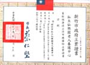

|  |
本院通過政府認證 福 字第二四七一六號 是一個合法安全的優質安養院。 |
民國七十年代創辦人陳信榮先生打算從公職退休並積極尋覓人間的「仙樂園」，尋尋覓覓中來到一片荔枝園，當下被眼前的美景所震懾。從遠方眺望群山環抱，青山綠水一片天，老鷹在林間盤旋遨翔、白鷺鷥在水邊悠閒散步；驚喜之餘赫見林間竟有一座土地公廟；廟前有一水池，天然湧泉，源源不絕。莫非天意，就是這裡—夢中尋尋覓覓的人間『仙樂園』。
荔園山莊佔地一萬一千餘坪，蓊蓊鬱鬱的荔枝樹，無畏狂風暴雨昂首度過了無數的嚴冬溽暑，庇蔭著這片土地。在這裡生生不息的萬物和大自然和諧的共存著。年復一年荔樹爺爺仍努力的孕育出香山最酸甜的荔枝猶如真實的人生，酸酸甜甜的，盛夏的七月滿山的荔枝，荔園山莊歡迎你來品嚐踏青。 婆娑樹海美麗莊園創辦人陳信榮先生本著老吾老以及人之老的精神一步一腳印，青山綠水中打造了這片人間的『仙樂園』。在這裡有愛、有溫暖更有希望。